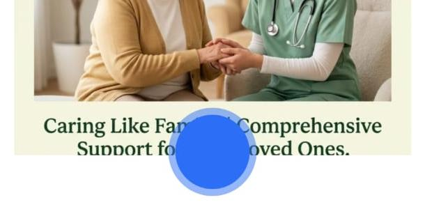

24
24/7 Nursing Care
Round-the-clock nursing support for changing health and daily care needs.
A peaceful senior living and healthcare centre offering assisted living, professional nursing and personalised support for every stage of ageing.
Round-the-clock nursing support for changing health and daily care needs.
A supportive home where residents retain independence with the right help nearby.
Thoughtful attention to the comfort and health concerns that come with ageing.
Regular health monitoring and attentive medical support based on individual needs.
Short-term and long-term residential care with a safe, homelike setting.
Individual support with daily routines, personal needs and meaningful companionship.
At Nisarga Care Arogyadhama, every senior is cared for as a valued individual. Our trained nurses and caregivers provide a warm living environment with attention to physical well-being, emotional comfort and quality of life.
Spread across half an acre of greenery, our centre combines the calm of a natural campus with professional nursing and medical supervision.

Nisarga Care's organisation began its journey in 1989 with a commitment to providing shelter and care for people in need. Every resident has a different story, different needs and different expectations. That understanding guides our personal approach to care.
Moving into a care home is a significant transition for families too. Our team works to make this change comfortable and reassuring, helping residents feel safe, valued and connected.